摘要
提前预报未来数小时的地表太阳辐照度，是电网估计光伏出力、安排备用容量的重要依据。云的移动和生消使这类预报面临两重困难：既要判断云何时遮蔽站点，也要估计届时有多少太阳辐射能够穿过云层。即使云的位置预报准确，低估云的光学厚度仍可能导致辐照度预报偏高。本文从预测的多光谱云图中反演云光学厚度（COT），检验在相同云图和太阳几何条件下，显式引入这一表征云层消光强弱的物理量能否改善站点水平面总辐照度（GHI）预报，尤其是厚云条件下的预报。DyDiff利用风云四号B星AGRI的历史观测生成8组未来云图。我们从每组云图反演COT，结合光谱与太阳几何信息预报未来15～240分钟的GHI，再对8组GHI预报取平均。各站点的辐照度模型分别用同期卫星图像和本站实测GHI训练，预报时固定参数。湖北和湖南站点的地面观测验证表明，在相同的预测云图上，加入COT后，两省的GHI预报误差均有所降低。厚云条件下的改善更为明显：引入COT减轻了模型对地面辐照度的高估。
1 引言
随着光伏发电在电力供应中的占比提高，电网日内调度需要更准确地预判未来数小时的光伏出力[12,33]。光伏组件接收的太阳辐照度直接影响其输出功率，因而地表辐照度预报是估计未来光伏出力的重要依据。在分钟至小时尺度上，云的移动和生消是引起地表辐照度快速波动的主要原因之一。不同预报工具各有适用时效：地基全天空成像仪适合捕捉约30分钟内的局地快速云影过境，数值天气预报（NWP）主要支撑数小时至日前尺度的预报，而静止卫星连续的区域云场观测能够追踪云团向站点的逼近，是提前约15分钟至4小时日内短临预报的核心资料来源[1,16,32,35]。但仅判断有无云遮蔽还不够：即使云的覆盖范围相近，薄云仍可透过较多太阳辐射，光学厚云却可能使站点的水平面总辐照度（GHI）大幅降低。因此，预报云遮蔽期间的GHI，还需估计云层对太阳辐射的衰减程度。
从静止卫星观测估算地表GHI，主要沿半经验、物理和数据驱动三条路径发展。半经验方法（如Heliosat系列）根据归一化可见光反射率构建云指数，再对晴空辐照度进行缩放[3,4]；物理方法将反演得到的云光学属性输入快速辐射传输查找表或神经网络代理模型，显式计算直射和散射分量[5,6,12]。近年来，深度学习方法直接利用多光谱可见光和红外卫星图像估计站点或网格GHI[7,8,9,11]，也已用于季风气候区风云四号卫星辐照度反演及验证[8,29]。要刻画云对地表辐照度的衰减作用，不同云属性表示的粒度差异明显：二值云掩膜和有云概率用于判别像元是否有云及其置信度[31,35]，却无法直接反映云层的消光强弱；相比之下，云光学厚度（COT）表示沿云柱累积的辐射消光，可从卫星多光谱观测中反演[2]，深度学习也已用于从静止卫星观测反演云光学厚度[10,39]。
上述方法主要面向由同期卫星观测估计当下GHI；要将其推进到未来数小时的短临预报，还必须处理云在移动过程中的发展与消散。现有基于卫星的短临辐照度预报主要通过三类方式应对这一云场演变。第一类是平流外推方法，利用相邻云图估计云运动矢量，或结合数值风场将起报时的云场平移至未来位置[15,16]，却会沿用起报时刻的云属性。若原本较薄的云在途中增厚，仅平流初始云态的预报即使准确给出云到达时刻，仍可能高估地表辐照度。第二类是时空深度学习区域场预测，直接从历史静止卫星观测学习非线性的云移动、发展与消散：卷积和循环网络已被用于预测云指数或光伏电站云覆盖场[32,34,35]，卷积循环网络、生成式模型与时空Transformer也已用于直接预测区域卫星辐照度场[17,20,37]。由于以逐像元均方误差训练的确定性模型随时效延长容易模糊云边界、削弱极端变化，条件扩散集合模型近期被引入卫星短临辐照度预报，以保留更清晰的空间结构并表征多种演变情形[36]。第三类是由历史卫星序列直接预测站点未来GHI的方法，包括直接以历史多光谱图像为输入，或先估计历史空间辐照度场再级联输出未来站点GHI的方案[18]。由于这类方法不显式生成未来多光谱云图，而是将云场演变与辐射衰减耦合在同一站点预报输出中，难以区分高估偏差究竟源于云位置或生消预测失准，还是源于对云层消光强度的刻画不足，也无法在不改变云场预报的条件下单独检验云衰减表征的作用。相比之下，先预测未来多光谱云图、再由云图映射站点GHI的两阶段框架，可以固定同一份预测云图，直接检验显式引入云衰减信息能否改善辐照度预报。
已有研究将COT引入短临太阳辐照度预报，多采用直接外推卫星云产品的路线：既包括基于光流平流的业务或准业务系统（如NextSENSE2与DNI短临预报）[12,15]，也包括利用深度时空模型预测云光学属性再映射为地表辐照度的方案[19,33,38]。不过，卫星驱动的短临辐照度预报仍普遍存在随天气云况变化的系统偏差[14]；即便在显式预测光学厚度的方案中，厚云条件下的辐照度高估依然突出[33]。仅外推二级云产品可能舍弃原始多光谱图像中蕴含的红外云顶、云相等辅助信息；反过来说，对于以预测多光谱云图为输入的站点模型，云的光学特性已部分反映在各波段的信号中，但仅依托有限站点地面观测从高维光谱直接拟合GHI，未必能像经云物理产品监督的反演器那样清晰提炼强云消光信息。从同一幅预测云图中反演COT，并把它与光谱信息一起提供给模型，能否减轻厚云条件下地面辐照度的高估？其增量作用又在多大程度上受云图外推方法的影响？
围绕上述问题，本文基于风云四号B星（FY-4B）AGRI多光谱观测与本团队自研的云物理属性（CPP）参考数据，从方法构建、受控验证与误差诊断三个方面阐明显式COT表征在卫星短临GHI预报中的作用。首先，构建保留预测多光谱信息并融合显式云消光表征的预报框架：采用动力学扩散集合模型（DyDiff[27]）预测未来区域多光谱云图，由经CPP监督训练的U-Net逐帧提取站点局地COT，为依托有限地面观测训练的站点辐照度模型补强强云衰减表征。其次，在严格固定预测云图与太阳几何的受控条件下，于湖北和湖南两省五个站点独立量化显式COT对提前15～240分钟GHI预报的增量价值，重点检验其对光学厚云条件下地表辐照度高估的缓解作用。最后，系统分析云图外推差异、COT反演误差及其时间演变对下游GHI预报的影响，阐明显式COT表征改善或劣化预报的条件与误差来源。
2 研究区域与数据
2.1 区域、卫星观测与云参考产品
地面GHI观测来自湖北牛首、王寨、米庄三站和湖南四里、竺家两站（图1）。湖北三站（32.04°～32.12°N、112.04°～112.20°E）集中在鄂北约15～20 km范围内；湖南四里（25.95°N、112.35°E）与竺家（29.57°N、112.45°E）分别位于湘南与湘北，相距约400 km。湖北站点提供1分钟记录，湖南站点提供5分钟区间平均值。经质量筛选（见补充材料S1），用于同期GHI估计的AGRI与站点配对观测在湖北分布于2025年8月至2026年5月，在湖南分布于2024年4月至2026年6月。
AGRI输入为C01～C06（6个可见光与近红外反射率通道，0.47～2.225 μm）、C09～C15（7个热红外亮温通道，6.25～13.3 μm，不含3.75 μm的C07～C08通道）共13个通道，投影至0.04°经纬度间隔（标称4 km分辨率）的256×256区域网格（范围约1,000×1,100 km；湖北为26.32°～36.52°N、107.08°～117.28°E，湖南为22.28°～32.48°N、106.44°～116.64°E）。图像、几何和COT由相同站点索引配准。COT反演器和辐照度模型均接收同一站点中心3×3邻域（0.12°×0.12°，约12×13 km）。
云光学厚度和云相取自本团队基于FY-4B/AGRI观测反演的云物理属性（CPP）产品。该产品采用曾用于静止卫星红外云光学厚度反演的SmaAt-UNet架构[39]。我们按经纬度将CPP与区域AGRI图像逐像元匹配，用日间有效像元的COT训练站点邻域的反演模型。比较不同云况下的GHI预报误差时，按站点中心像元的参考COT对样本分组。
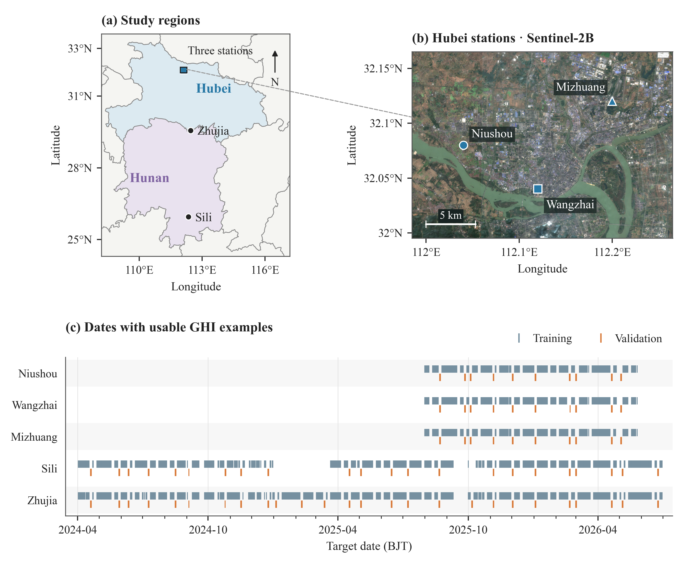
图1 研究站点与同期卫星观测可用于估计GHI的日期。（a）湖北、湖南站点分布（省界：Natural Earth）；（b）湖北三站的Sentinel-2B真彩色影像（Copernicus，2025年10月28日11:19，北京时间，10 m）；（c）各站训练和验证日期，每条短线表示当天至少有一对有效的AGRI与GHI观测。
2.2 站点辐照度与晴空指数
令τ为15分钟目标区间结束时刻，站点s的目标为区间平均GHI。湖南5分钟区间末观测聚合为
湖北在相同右闭区间内按有效一分钟箱构造标签，不完整窗口排除。晴空辐照度使用Ineichen–Perez模型，并在相同区间取平均[22,23]。学习目标与还原为
2.3 时间采样
训练、验证和最终评价按日期块分离，以降低拟合与评价样本的依赖性[24]。两区均在覆盖充分的月份中，分别留出连续两天用于验证、另外连续两天用于测试，并在每个留出块前后保留一天缓冲；合格日不足20天的月份只用于训练。构成单条多帧估计或预报样本的所有卫星帧必须处于同一分区。归一化只用各自省份的训练数据拟合。本文所报结果来自验证集，预留测试分区尚未评价。
3 方法
本方法结合DyDiff预测AGRI图像、反演COT及太阳几何信息，输出站点GHI预报。湖北和湖南分别训练云图预测模型和COT反演模型，供各自省内的站点共用。辐照度模型则按站点训练。每个站点利用同期卫星观测和本站实测GHI训练模型，按留出验证日期上的GHI估计RMSE选模。预报时固定模型参数，以预测云图为输入，在这些验证日期上逐站评价GHI预报。
3.1 监督COT反演
对于图像A和几何g，反演器输出非负对数COT场：
U-Net[25]利用站点周围的多光谱观测与太阳几何，逐帧反演3×3邻域内各像元的COT（共16个输入通道：13个AGRI波段，加太阳天顶角余弦、相对方位角余弦及白天二值掩膜；湖北和湖南参数量分别为119,233和470,913，见补充表S1、S2）。训练时，以CPP参考值的log(1+COT)为目标，仅对有效像元计算Huber损失[26]：
其中m表示输入与参考均有效的像元。推理时，反演器使用AGRI和太阳几何，并沿用训练数据的归一化。其参数在辐照度模型训练及预报期间保持不变。
3.2 利用局地COT场估计辐照度
对每个站点，取以该站点所在像元为中心的3×3像元邻域，由于COT分布高度右偏，模型输入经训练集均值和标准差标准化的AGRI各通道及对数COT场（而非线性COT ）。式（5）中，表示选取站点周围这一邻域的操作。
辐照度模型依次读取目标时刻前30分钟、前15分钟和目标时刻的连续三帧（，图2）；每帧的光谱与太阳几何均取自同一站点邻域。加入COT的模型接收按原空间位置排列的九个标准化对数COT值，保留局地变化及样本间的数值差异，对照模型则将该通道置零。两种辐照度模型写为
两者采用相同的卷积网络（42,529个可训练参数，连续三帧每帧输入17通道；补充表S2），先融合三帧信息，再提取站点周围的空间特征，据此估计晴空指数。
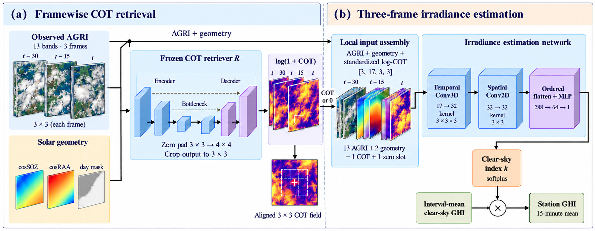
图2 利用三帧卫星观测估计站点GHI。（a）根据每帧站点周围3×3像元的AGRI观测和太阳几何反演COT。（b）模型结合三帧输入估计晴空指数，再换算为15分钟平均GHI。加COT的模型输入标准化后的对数COT，基线模型将该通道置零。图中影像为示意。
将估计的晴空指数乘以同期晴空辐照度，得到站点GHI。两个模型均以站点GHI估计值与地面观测之间的均方误差为训练目标。
3.3 短时预报
以最后一帧AGRI观测的时刻为起报时刻。DyDiff模型[27]根据最近八帧多光谱观测和太阳几何，在区域256×256网格上预测未来十六帧多光谱图像。对于每一帧预测图像，反演器利用站点中心3×3邻域及该时刻的太阳几何估计局地COT（图3a）：
其中，分钟。各目标时刻的太阳几何由时间和站点位置确定。
每个目标时刻的GHI预报使用截至该时刻的连续三帧，每帧的局地光谱、由反演并按式（5）经训练集统计量标准化的对数COT和太阳几何按观测或预测时刻配准（图3b）。预报未来15分钟的GHI时，前两帧取自起报前15分钟和起报时刻的观测，第三帧取自预测。预报未来30分钟时，只有第一帧取自起报时刻的观测。从45分钟起，三帧均来自预测云图，因此另行评价45～240分钟的预报表现。
为衡量COT对GHI预报的贡献，两个辐照度模型使用相同的三帧光谱和太阳几何，其中一个模型还接收由相应图像反演的COT。每次起报由DyDiff独立采样八组云图序列，两组模型使用相同的八个成员，各自逐成员预报GHI，再对同一站点、同一时效的八个GHI预报取平均。为追踪单次云场演变，云图个例和湖南COT来源替换试验使用单个成员。
为检验COT增量是否依赖于云图外推方法，我们另用确定性U-Net[25]和光流平流预测云图。云图预测U-Net利用过去八帧多光谱图像和太阳几何，一次生成未来十六帧图像。光流法由最后两帧C13红外观测估计云的位移场[30]，以恒定速度将末帧多光谱图像平流至相同的目标时刻。对每种外推方法，均在相同的站点邻域使用同一套冻结的COT反演器和有、无COT的辐照度模型。云图预测模型的训练与选模方法见补充材料S1。
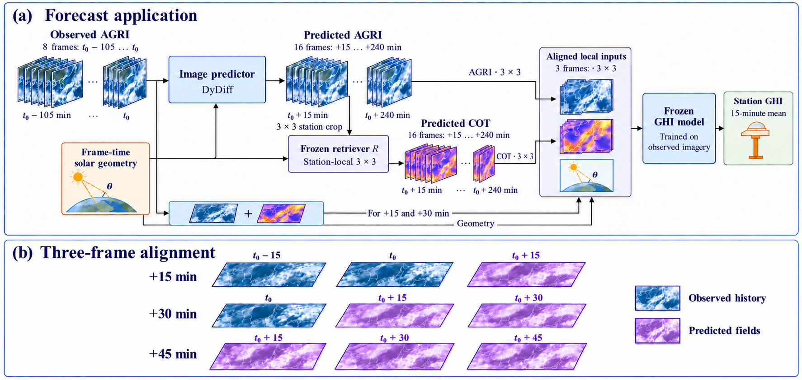
图3 从历史云图到站点GHI预报。（a）DyDiff用8帧历史观测预测16帧AGRI云图。GHI模型逐帧使用站点邻域云图、反演COT及同一时刻的太阳几何。（b）色块示意各预报时效的三帧输入。+15分钟时有两帧观测，+30分钟时有一帧，从+45分钟起三帧均为预测。
4 实验设计
4.1 预报评价与真实图对照
主要比较使用相同DyDiff预测图像，评价加入COT前后的GHI预报。真实图对照用于分析引入云图预报误差之前的辐照度响应。
每次比较使用相同站点、初始化时间（如适用）、目标时间、GHI标签及有效白天掩膜[21]。区域平均指标由省内各站点、各训练种子的预报误差等权平均得到。我们用均方根误差（RMSE）、平均绝对误差（MAE）和平均偏差（MBE）评价GHI预报，单位均为W/m²。MBE为预报值减去实测值所得差值的平均值。加入COT后的RMSE相对降幅为
以目标日期（北京时间）为单位，对有、无COT两组预报进行5,000次配对自助重采样，估计两组RMSE差值的95%置信区间[28]。
4.2 云况分层、预测COT评价与辅助输入对照
按每个15分钟区间结束时站点中心像元的CPP参考COT划分云况。Peng等[33]以参考光学厚度5、10、20和30为分界评价GHI预报误差。Kubar和Jiang[40]以5和30为界，区分热带西太平洋的卷云、砧云和光学厚度较大的高云。本文沿用这两个分界，并将接近零的反演值单列。近零、薄云、中等光学厚度和厚云四组依次为[0,0.1)、[0.1,5)、[5,30)和[30,100]，其中100为本研究CPP产品的取值上限。我们比较各组有无COT输入时的GHI误差，重点考察加入COT能否减轻厚云条件下的辐照度高估。
为诊断不同云况和外推方法下GHI响应差异的上游来源，我们将预测云图反演的站点中心像元COT分别与目标时刻的CPP和观测云图反演值比较。在每个时效段内，各站均在相同的预报记录上计算平均偏差和平均绝对误差，再对各站等权平均。DyDiff先按成员分别计算误差，再取八个成员的平均值。
进一步地，为在厚云条件下区分连续光学厚度与云存在性信息的作用，我们在相同的AGRI与太阳几何输入上引入有云概率（描述像元被云覆盖的可能性[31]）并比较四种配置：无辅助输入、仅云概率、仅COT和两者联合。两省分别以CPP产品中的云相（CLP）有云和晴空标记训练分类器，使用与COT反演器相同的站点周围3×3邻域估计有云概率（补充材料S1）。对于每个DyDiff成员，冻结的辐照度模型根据该成员的预测云场及相应辅助输入预报GHI。四组均先平均八个成员的GHI预报，再在共同的厚云验证样本上评分。
4.3 对COT来源的敏感性
为区分预测COT随时间演变与静态初始云态的贡献，并量化云图外推误差通过COT向GHI的传递，我们在湖南相同预报样本上固定同一DyDiff成员的预测AGRI、COT反演模型和辐照度模型，比较三帧序列中未来时刻的三种COT输入（已知历史帧保持不变）。除由预测云图逐帧反演的COT外，持久性对照将未来COT固定为起报时末次观测图像的反演值，以检验预测COT随时间演变能否改善GHI预报；事后实况对照则替换为起报后实际观测云图反演的COT，以评估在相同预测AGRI下消除未来COT外推误差后的GHI误差变化。
5 结果
我们分别以DyDiff、U-Net和光流外推的云图为输入，比较加入预测COT前后的GHI预报误差，随后考察不同云况和具体事件中的预报表现。通过真实图对照分析COT表示及辐照度响应，并用输入替换检验预测COT演变的作用。
5.1 不同云图外推方法下加入预测COT前后的GHI预报误差
采用DyDiff云图时，加入COT后，湖北和湖南的GHI预报RMSE和MAE均减小（表1）。湖北的RMSE降低3.58%，平均高估幅度由20.17降至16.97 W/m²。湖南的RMSE降低1.46%，两组预报均低估GHI，平均低估幅度约为9 W/m²。采用U-Net云图时，湖北和湖南的RMSE分别降低7.16%和1.97%，两省的MAE也均减小；尽管湖北加COT后的RMSE与DyDiff相近，U-Net仍伴随更大的正偏差，且在湖南的整体误差更高。采用光流云图时，湖北和湖南的RMSE分别增加15.12%和5.14%，两省的MAE也均增大。
表1 两省15～240分钟GHI预报误差（W/m²）。箭头由无COT指向加COT。
| 云图外推方法 | 地区 | RMSE | MAE | MBE | ΔRMSE [95%置信区间] |
|---|---|---|---|---|---|
| DyDiff | 湖北 | 98.34 → 94.82 | 66.91 → 63.46 | +20.17 → +16.97 | −3.52 [−8.81, 1.59] |
| DyDiff | 湖南 | 117.12 → 115.40 | 77.64 → 75.06 | −8.47 → −8.70 | −1.71 [−3.41, −0.02] |
| U-Net | 湖北 | 101.46 → 94.19 | 71.84 → 64.74 | +42.87 → +35.82 | −7.26 [−12.66, −2.91] |
| U-Net | 湖南 | 125.19 → 122.72 | 84.66 → 81.14 | −7.06 → −6.45 | −2.47 [−3.86, −1.07] |
| 光流 | 湖北 | 128.58 → 148.03 | 83.11 → 93.16 | +30.72 → +40.64 | +19.45 [10.54, 28.40] |
| 光流 | 湖南 | 139.91 → 147.10 | 92.81 → 98.26 | −12.20 → +3.55 | +7.19 [2.58, 12.39] |
DyDiff取八个成员GHI预报的平均值。U-Net和光流每次起报各生成一组云图。MBE为正表示高估。ΔRMSE为加COT减去无COT的配对RMSE差值，括号内为95%置信区间。
按时效、站点与集合规模进一步分解上述区域结果：采用DyDiff云图时，两省加入COT后全部16个预报时效的GHI RMSE均略有下降，包括三帧均为预测云图的45～240分钟时段（湖北降低3.40%，湖南降低1.45%）；而采用光流云图时，加入COT使较长时效的RMSE增大（补充图S9）。分站点看，使用DyDiff云图时湖北三站误差均有下降，而湖南的误差降幅主要来自四里，竺家加入COT前后的误差接近（补充表S4）。在集合规模方面，加入COT后将扩散成员从4个增至8个并对各成员的GHI预报取平均，湖北和湖南的RMSE分别进一步降低0.36和0.86 W/m²（补充材料S2）。
5.2 不同云况与事件中的预报表现
以目标时刻的CPP参考COT分组后，加入预测COT使厚云组的DyDiff预报RMSE在湖北降低10.05 W/m²（11.73%），在湖南降低6.11 W/m²（7.64%）；两省的GHI正偏差分别由50.41降至36.05 W/m²、由27.99降至17.97 W/m²。湖北薄云组的RMSE降低14.96 W/m²，中等光学厚度组却增加8.74 W/m²；湖南四组中，厚云组的降幅最大（补充表S5）。在相同厚云样本上，光流预报加入COT后的RMSE在湖北和湖南分别增加26.98和29.84 W/m²。
从预报时效45分钟起，GHI模型使用的三帧云图均由DyDiff外推得到。在厚云条件下，两省加入预测COT后的GHI预报RMSE降幅在135～240分钟均小于45～120分钟（表2）。
表2 八成员DyDiff预报在厚云条件下各时段的GHI RMSE（W/m²）。降幅为无COT组减去加COT组的RMSE。
| 时效（分钟） | 湖北·无COT | 湖北·加COT | 湖北·降幅 | 湖南·无COT | 湖南·加COT | 湖南·降幅 |
|---|---|---|---|---|---|---|
| 15～30 | 64.99 | 46.37 | 18.62 | 54.00 | 45.27 | 8.72 |
| 45～120 | 68.14 | 51.17 | 16.96 | 70.37 | 63.51 | 6.86 |
| 135～240 | 101.50 | 95.48 | 6.02 | 91.64 | 86.14 | 5.50 |
表3在四种辅助输入均有八成员预报结果的共同厚云验证子集上比较误差。湖北在云概率基础上加入COT后，RMSE由67.72变为62.17 W/m²，降低5.55 W/m²，平均偏差由+31.54变为+23.86 W/m²。湖南在云概率基础上加入COT后，RMSE由86.97变为83.64 W/m²，降低3.33 W/m²，平均偏差由+34.12变为+24.51 W/m²。两省均以联合输入的RMSE和MAE最低，仅使用COT时平均偏差最接近零。
表3 厚云条件下不同辅助输入的八成员DyDiff辐照度预报误差（W/m²）。
| 地区 | 辅助输入 | RMSE | MAE | MBE |
|---|---|---|---|---|
| 湖北 | 无辅助输入 | 71.94 | 47.92 | 33.50 |
| 云概率 | 67.72 | 45.81 | 31.54 | |
| COT | 63.20 | 38.86 | 21.43 | |
| 云概率与COT | 62.17 | 38.72 | 23.86 | |
| 湖南 | 无辅助输入 | 88.69 | 55.66 | 34.45 |
| 云概率 | 86.97 | 54.23 | 34.12 | |
| COT | 84.01 | 48.01 | 24.11 | |
| 云概率与COT | 83.64 | 47.94 | 24.51 |
厚云为站点中心CPP参考COT在30～100的样本。湖北含139个站点—目标时次（6天），湖南含165个（25天）。各站点和训练种子等权。平均偏差（MBE）为预报减观测，粗体标出各地区最低RMSE、MAE及最小绝对MBE。联合输入相对仅用云概率的RMSE差值及95%置信区间（W/m²）在湖北为−5.55 [−14.84, 1.87]，在湖南为−3.33 [−6.39, 0.46]。
图4给出了两省四种参考COT云况下的典型15～195分钟预报序列。随光学厚度增大，实测与预报GHI量级明显下降；各云况下的八成员平均曲线总体平滑，能够跟踪背景辐照度水平，但难以刻画短时云隙或局地透光引发的尖峰与骤降。与区域统计反映的厚云平均减偏不同，单个连续过程中加COT对曲线的调节幅度有限且方向并不一致，例如湖北薄云与湖南厚云个例中均出现局部抬升，说明统计增益主要体现为多样本平均下的系统偏差校正。
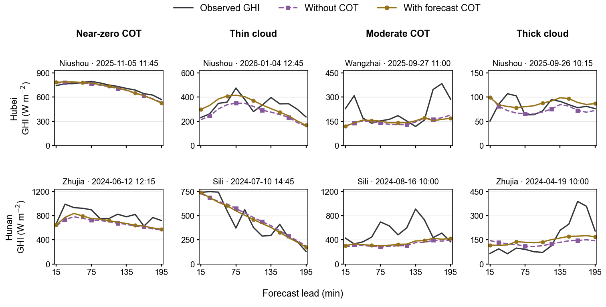
图4 四种云光学厚度条件下的站点GHI实测与预报。上排为湖北，下排为湖南；各列按站点参考COT依次为近零、薄云、中等光学厚度和厚云。各格比较同一次起报后15～195分钟内有、无预测COT的预报。连续13个目标时刻中，至少10个属于该列所示云况。标题为起报时刻（北京时间）。各格纵轴范围不同。
5.3 观测与预测云图的COT反演误差
基于AGRI观测反演的COT与同期CPP参考值呈正相关，湖北和湖南的相关系数分别为0.795和0.782（图5）。在两省，观测云图反演的厚云COT也低于CPP参考值（补充材料S1）。
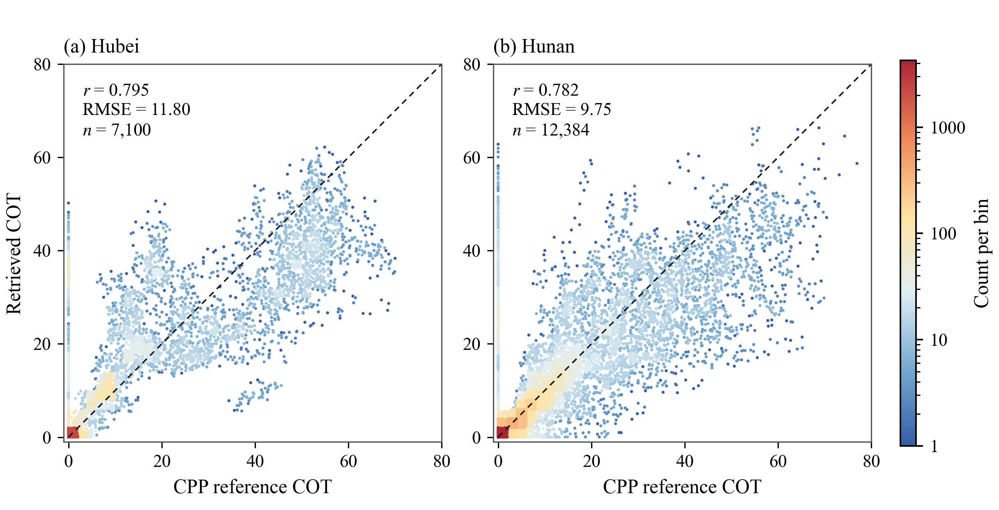
图5 湖北和湖南站点邻域的AGRI反演COT与同期CPP参考COT。每个点是一对像元记录，颜色为所在2×2 COT区间的记录数，两地共用对数色标。虚线为1∶1线。
将同一反演器用于预测云图后，DyDiff在135～240分钟的厚云COT相对CPP偏低16.77（湖北）和14.63（湖南）；其中与同期观测云图反演值的差异分别为4.19和4.94（补充图S6、S7），说明厚云低估主要继承自反演器本身，云图外推进一步加重了低估。在湖北中等光学厚度云样本上，偏差方向相反：三个时效段的DyDiff反演值均比CPP平均偏高约5，而与同期观测云图反演值的平均差均在0.3以内（补充图S6、S7），同样表明该正偏差主要源于反演器相对CPP的基线差异。对比不同云图外推方法，光流云图的厚云COT误差随时效急剧放大，到135～240分钟时两省的平均绝对误差均超过40，而DyDiff和U-Net均保持在20以下。
上述长时效厚云低估在空间云场上表现为高COT核心区的收缩，但单站仍可能因局地云团位移出现反向偏差。例如，在6月15日的湖南个例中，DyDiff第一成员的高COT区随预报时效延长而缩小（图6）。到15:15（+240分钟），湖南省内仍有成片区域在观测云图上的反演COT达到或超过30，而该预报成员在省内已无像元达到这一阈值。四里站像元的差异方向相反，同一时刻从预测云图反演的COT为13.0，高于观测云图的4.4。该站的COT和GHI时序见补充图S4。
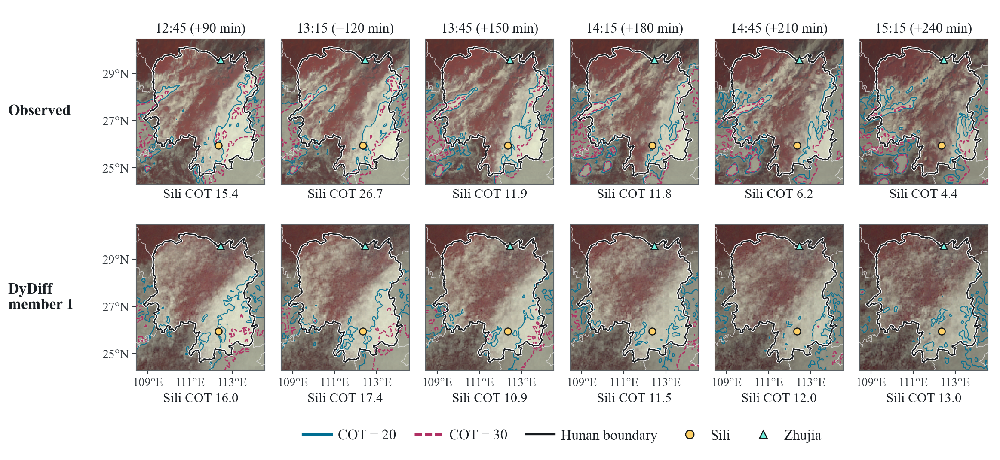
图6 2025年6月15日湖南上空的AGRI假彩色合成影像（C03、C02与C01通道，上）与北京时间11:15起报的DyDiff第一成员预报（下）。各列对齐起报后90至240分钟的目标时刻，RGB采用相同的平方根拉伸，湖南省界外作压暗处理。等值线标出反演COT为20和30的位置，省界取自Natural Earth，图下数值为四里站像元的反演COT。
5.4 利用同期图像估计GHI时的厚云偏差
利用同期AGRI观测和太阳几何信息估计站点GHI时，无COT模型在厚云条件下高估了两省的辐照度。加入COT后，湖北的平均高估幅度由22.4降至3.9 W/m²，湖南由17.2降至6.3 W/m²。按参考COT划分的四类云况中，两省均以厚云组的RMSE相对降幅最大，湖北和湖南分别为32.35%和14.70%（补充图S5）。湖南薄云组的RMSE则增加了6.4 W/m²。
5.5 未来COT的逐时更新对GHI预报的影响
在湖南验证样本上，我们固定同一DyDiff成员的预测云图和辐照度模型，仅改变未来帧的COT来源（表4）。沿用起报时观测云图的COT反演值时，GHI预报RMSE为133.35 W/m²。每15分钟从预测云图更新COT后，RMSE降至123.29 W/m²，降低10.07 W/m²。在离线对照中，将COT替换为各目标时刻观测云图的反演值，RMSE进一步降至103.90 W/m²。
表4 湖南单成员预报中替换未来帧COT来源后的GHI误差（W/m²）。差值以预测图反演COT为参照。
| 未来帧COT来源 | RMSE | RMSE差值 [95%置信区间] |
|---|---|---|
| 末次观测图反演值保持不变 | 133.35 | +10.07 [5.74, 14.52] |
| 预测图反演 | 123.29 | 参照 |
| 目标时刻实况图反演 | 103.90 | −19.39 [−23.51, −15.45] |
6 讨论
6.1 COT在站点辐照度预报中的作用
由于无COT基线已接收完整的13通道多光谱邻域和太阳几何信息，加入COT带来的收益反映的是从同源AGRI观测经CPP监督学得的云衰减表示的增量作用，而非新增独立观测。COT描述穿过云柱的累计消光，能够表示有云场景内部的衰减强弱。辐射传输方法利用光学厚度计算到达地面的直接和散射辐射[6]，SENSE2也将有云与晴空条件下的GHI比值联系到COT和太阳天顶角[12]。由于GHI包含散射分量，其变化不能仅由直射光束的消光关系描述。这为结合COT、光谱及几何信息刻画云的辐射作用提供了依据。厚云辅助输入对照（表3）从实证上印证了上述云属性表征粒度的差异：两省在已有有云概率输入的基础上再加入COT，厚云GHI预报的RMSE和平均正偏差均进一步下降，说明连续的光学消光表征能够提供单纯云存在概率无法替代的衰减幅度信息。
从误差量级看，本文15～240分钟DyDiff加COT预报的RMSE（湖北94.82 W/m²，湖南115.40 W/m²）与近期静止卫星1～4小时GHI预报研究报道的约90～160 W/m²范围相当[33,37]。就物理机制而言，Peng等[33]仅外推云光学厚度时，在光学厚云下仍存在持续的GHI高估；本文将预测多光谱云图与反演COT联合输入后，同期实况估计和DyDiff预报均减轻了厚云正偏差。
这种改善随云况和站点变化，并非在所有条件下一致出现。加入COT后，湖北中等光学厚度云的DyDiff预报误差增加8.74 W/m²（补充表S5），湖南薄云样本的同期观测估计误差增加6.4 W/m²，竺家站的总体降幅也仅0.22%（补充表S4）。湖北中等云误差上升与图5a及补充图S6的反演诊断一致：湖北反演器在中等CPP区间存在一簇偏高样本（预测图反演值亦比CPP平均高约5），偏高的COT输入冻结辐照度模型后易过度压低中等云下的GHI预报。在薄云条件下，低COT反射率反差微弱、反演噪声相对突出，因此显式COT最稳定的增益仍集中在强消光的光学厚云区间。
6.2 COT演变、外推敏感性与误差传播
湖南的COT来源替换试验（表4）表明，站点GHI预报精度高度依赖预测云图对云光学演变的刻画，而非保持静态的初始云状态。云何时移到站点上空、对阳光的衰减有多强，都会影响辐照度预报。预测云图中的云位置若有偏差，预报的辐照度下降就可能提前或推迟；此外，卫星观测视差和斜射云影也会在像元与站点观测之间带来空间错配[13]。即使云的位置预测准确，若预测云图模糊了局地厚云与薄云的差异，从中反演的COT也可能低估厚云的衰减作用，使预报的辐照度降幅偏小。这种衰减平滑效应在湖南省域个例中直观可见（图6）：到+240分钟时观测云图仍在省内保留成片COT≥30的核心区，而DyDiff第一成员在省内已无像元达到该阈值。已有短临研究同样指出多小时云图预测中的边界模糊与极值平滑难题[18,20,36]。
这一敏感性解释了加入COT在不同云图外推方法下产生相反效果的原因（表1、补充表S5）。采用DyDiff和U-Net云图时，即便在135～240分钟，厚云COT的平均绝对误差仍保持在20以下，加入COT后两省的区域GHI误差均有所降低。采用光流云图时，恒速平流忽略了云的发展与消散，厚云COT的平均绝对误差在135～240分钟超过40；湖北参考厚云样本有40.8%被判为中等光学厚度、18.6%超过100，湖南对应比例为46.4%和13.8%（补充图S8）。正负双向误差在平均偏差中部分抵消，绝对误差则持续放大，输入冻结辐照度模型后导致GHI预报明显劣化。
比较表1中的两种深度学习云图预测器还可看出区域差异。在湖南，八成员DyDiff加COT的精度明显高于确定性U-Net加COT（115.40对比122.72 W/m²）；但在湖北，确定性U-Net加COT的RMSE略低于DyDiff加COT（94.19对比94.82 W/m²），且加入COT的相对降幅更大（7.16%对比3.58%），尽管U-Net仍保留明显更高的正偏差（+35.82对比+16.97 W/m²）。由于无COT的U-Net在湖北高估更严重（+42.87 W/m²），引入COT在该省产生了更强的纠偏拉动；而在样本更长、覆盖更广的湖南，DyDiff在总体误差和偏差控制上均占优。业务部署中还需权衡确定性U-Net单次前向推理与扩散集合多步采样（8成员×25步）的计算开销。
6.3 局限性与后续研究
本文结论受以下研究范围与方法条件制约。首先，评价涵盖两个亚热带季风省份的五个站点，其中湖北三站集中在15～20 km范围内，验证集包含17个目标日期（厚云9天），湖南为51个目标日期（厚云33天）。此外，全文结果均来自同时参与选模的留出验证日期块；在投入实际应用前，还需对预留测试分区开展一次性独立验证，并扩展至更多气候区与站点网络。
其次，用于COT监督和云况分组的CPP数据是本团队基于FY-4B/AGRI观测自研的反演产品（SmaAt-UNet[39]），并非独立地面或主动遥感云真值，其反演误差会同时传入学习到的COT表示与厚云划分，地面辐射表观测质量也会影响卫星辐照度评价[29]。两省独立流程在COT反演器网络宽度和云相筛选条件上保留了区域差异（补充表S1），因此跨省数值差异同时反映了局地云气候特征与区域配置选择。此外，将1分钟和5分钟GHI聚合为以目标时刻结束的15分钟均值并与区间末时刻COT配对，难以完整刻画区间内的快速云过境过程。
后续研究可沿四个方向推进：（1）完成预留测试分区评价并扩展跨气候区站网验证；（2）在确定性集合均值之外，补充概率预报指标（如CRPS与预测区间覆盖率[36]）、辐照度骤变（ramp）事件诊断，以及与卫星初始化持久性和数值天气预报的基准对照[20,21]；（3）实测并优化多步扩散采样与确定性外推的推理延迟；（4）探索面向预报域的微调或改进多光谱云图外推模型，以缩小湖南实况COT替换试验所揭示的误差空间。
7 结论
本文提出一种COT辅助的卫星GHI短临预报方法，覆盖15～240分钟时效。该方法利用DyDiff预测未来AGRI图像，从中反演COT，再与光谱和太阳几何信息融合。辐照度模型在真实观测图像上训练，预报时保持参数不变。在五站的留出验证日期上，使用相同DyDiff预测云图时，加入COT使湖北和湖南的区域平均GHI RMSE分别降低3.58%和1.46%。这一比较量化了所评价预报链中反演云属性表示的贡献。
云况分析将COT的具体作用体现为厚云条件下辐照度高估的减轻。DyDiff预报中，湖北和湖南厚云样本的GHI RMSE分别降低11.73%和7.64%，两区正偏差均减小；在已有有云概率输入时，叠加COT仍进一步降低了两省的厚云预报误差和正偏差。补充的真实图像实验呈现相同的偏差变化，在厚云样本中，估计RMSE分别降低32.35%和14.70%。这些结果将连续光学厚度表示与强云衰减条件下更准确的辐照度幅度估计联系起来。湖南薄云估计在加入COT后则出现误差增加。
湖南COT来源替换实验提示，应进一步改善预报对云光学演变的刻画。后续可在保持反演器和辐照度模型不变的条件下，检验云到站时刻、局地光学对比以及增厚、减薄过程的预测改进。通过站点配对评价，可进一步确定这些变化对GHI总体误差和COT增量作用的影响。
参考文献
Guanghui Huang, Zhanqing Li, Xin Li, et al. Estimating surface solar irradiance from satellites: Past, present, and future perspectives. Remote Sensing of Environment, 233:111371, 2019. DOI/原始出处.
Teruyuki Nakajima and Michael D. King. Determination of the Optical Thickness and Effective Particle Radius of Clouds from Reflected Solar Radiation Measurements. Part I: Theory. Journal of the Atmospheric Sciences, 47(15):1878–1893, 1990. DOI/原始出处.
D. Cano, J. M. Monget, M. Albuisson, et al. A method for the determination of the global solar radiation from meteorological satellite data. Solar Energy, 37(1):31–39, 1986. DOI/原始出处.
C. Rigollier, M. Lefèvre and L. Wald. The method Heliosat-2 for deriving shortwave solar radiation from satellite images. Solar Energy, 77(2):159–169, 2004. DOI/原始出处.
H. Takenaka, T. Y. Nakajima, A. Higurashi, et al. Estimation of solar radiation using a neural network based on radiative transfer. Journal of Geophysical Research: Atmospheres, 116(D8):D08215, 2011. DOI/原始出处.
Zhipeng Qu, Armel Oumbe, Philippe Blanc, et al. Fast radiative transfer parameterisation for assessing the surface solar irradiance: The Heliosat-4 method. Meteorologische Zeitschrift, 26(1):33–57, 2017. DOI/原始出处.
Shanlin Chen, Chengxi Li, Yuying Xie and Mengying Li. Global and direct solar irradiance estimation using deep learning and selected spectral satellite images. Applied Energy, 352:121979, 2023. DOI/原始出处.
Mengmeng Song, Dazhi Yang, Hongrong Shi, et al. STARNet: A Deep‐Learning Algorithm for Surface Shortwave Radiation Retrieval From Fengyun‐4A. Geophysical Research Letters, 52(13):e2025GL116237, 2025. DOI/原始出处.
K. R. Schuurman and Angela Meyer. Surface solar radiation: AI satellite retrieval can outperform Heliosat and generalizes to other climate zones. International Journal of Remote Sensing, 46(8):3331–3362, 2025. DOI/原始出处.
Daozhen Xia, Dongzhi Zhao, Kailin Li, et al. Retrieval of Cloud Optical Thickness During Nighttime from FY-4B AGRI Using a Convolutional Neural Network. Remote Sensing, 17(5):737, 2025. DOI/原始出处.
Zhouyi Liao and Carlos F.M. Coimbra. Hybrid solar irradiance nowcasting and forecasting with the SCOPE method and convolutional neural networks. Renewable Energy, 232:121055, 2024. DOI/原始出处.
Kyriakoula Papachristopoulou, Ilias Fountoulakis, Alkiviadis F. Bais, et al. Effects of clouds and aerosols on downwelling surface solar irradiance nowcasting and short-term forecasting. Atmospheric Measurement Techniques, 17(7):1851–1877, 2024. DOI/原始出处.
Job I. Wiltink, Hartwig Deneke, Chiel C. van Heerwaarden and Jan Fokke Meirink. Evaluating parallax and shadow correction methods for global horizontal irradiance retrievals from Meteosat SEVIRI. Atmospheric Measurement Techniques, 18(16):3917–3936, 2025. DOI/原始出处.
Long Shen, Yuan Yao, Yang Cui, et al. A weather typing adaptive bias correction method for FY-4B satellite-driven solar radiation nowcasting. Solar Energy, 312:114600, 2026. DOI/原始出处.
Tobias Sirch, Luca Bugliaro, Tobias Zinner, et al. Cloud and DNI nowcasting with MSG/SEVIRI for the optimized operation of concentrating solar power plants. Atmospheric Measurement Techniques, 10(2):409–429, 2017. DOI/原始出处.
Steven D. Miller, Matthew A. Rogers, John M. Haynes, et al. Short-term solar irradiance forecasting via satellite/model coupling. Solar Energy, 168:102–117, 2018. DOI/原始出处.
Andreas H. Nielsen, Alexandros Iosifidis and Henrik Karstoft. IrradianceNet: Spatiotemporal deep learning model for satellite-derived solar irradiance short-term forecasting. Solar Energy, 228:659–669, 2021. DOI/原始出处.
Shanlin Chen, Chengxi Li, Roland Stull and Mengying Li. Improved satellite-based intra-day solar forecasting with a chain of deep learning models. Energy Conversion and Management, 313:118598, 2024. DOI/原始出处.
Feng Zhang, Xin Hong, Zhijun Zhao, et al. Short‐Term Forecasting of Cloud Physical Properties Based on Fourier Neural Operator Method. Geophysical Research Letters, 53(8):e2025GL119553, 2026. DOI/原始出处.
Yang Cui, Ping Wang, Jan Fokke Meirink, et al. Solar radiation nowcasting based on geostationary satellite images and deep learning models. Solar Energy, 282:112866, 2024. DOI/原始出处.
Dazhi Yang, Stefano Alessandrini, Javier Antonanzas, et al. Verification of deterministic solar forecasts. Solar Energy, 210:20–37, 2020. DOI/原始出处.
Pierre Ineichen and Richard Perez. A new airmass independent formulation for the Linke turbidity coefficient. Solar Energy, 73(3):151–157, 2002. DOI/原始出处.
William F. Holmgren, Clifford W. Hansen and Mark A. Mikofski. pvlib python: a python package for modeling solar energy systems. Journal of Open Source Software, 3(29):884, 2018. DOI/原始出处.
David R. Roberts, Volker Bahn, Simone Ciuti, et al. Cross-validation strategies for data with temporal, spatial, hierarchical, or phylogenetic structure. Ecography, 40(8):913–929, 2017. DOI/原始出处.
Olaf Ronneberger, Philipp Fischer and Thomas Brox. U-Net: Convolutional Networks for Biomedical Image Segmentation. Medical Image Computing and Computer-Assisted Intervention – MICCAI 2015, 9351:234–241, 2015. DOI/原始出处.
Peter J. Huber. Robust Estimation of a Location Parameter. The Annals of Mathematical Statistics, 35(1):73–101, 1964. DOI/原始出处.
Xingzhuo Guo, Yu Zhang, Baixu Chen, Haoran Xu, Jianmin Wang and Mingsheng Long. Dynamical Diffusion: Learning Temporal Dynamics with Diffusion Models. International Conference on Learning Representations, 2025. 原始出处.
Daniil Hulak, Chun Sing Lai and Gareth Taylor. Comparison of Multi-Source Weather Data for Short-Term PV Forecasting. Energies, 19(21):5077, 2026. DOI/原始出处.
Y. Chen, D. Yang, C. Huang, et al. Validating physical and semi-empirical satellite-based irradiance retrievals using high- and low-accuracy radiometric observations in a monsoon-influenced continental climate. Atmospheric Measurement Techniques, 18(23):7315–7336, 2025. DOI/原始出处.
Gunnar Farnebäck. Two-Frame Motion Estimation Based on Polynomial Expansion. Image Analysis, LNCS 2749, 363–370, 2003. 原始出处.
Karl-Göran Karlsson, Erik Johansson, Nina Håkansson, Joseph Sedlar and Salomon Eliasson. Probabilistic Cloud Masking for the Generation of CM SAF Cloud Climate Data Records from AVHRR and SEVIRI Sensors. Remote Sensing, 12(4):713, 2020. DOI/原始出处.
Nils Straub, Steffen Karalus, Wiebke Herzberg and Elke Lorenz. Satellite-Based Solar Irradiance Forecasting: Replacing Cloud Motion Vectors by Deep Learning. Solar RRL, 8(24):2400475, 2024. DOI/原始出处.
Wanshan Peng, Tao He, Yichuan Ma and Yueming Zheng. A physics-informed machine learning method for short-term solar radiation forecast with satellite-derived cloud optical depth. Applied Energy, 406:127284, 2026. DOI/原始出处.
Franco Marchesoni-Acland, Andrés Herrera, Franco Mozo, et al. Deep learning methods for intra-day cloudiness prediction using geostationary satellite images in a solar forecasting framework. Solar Energy, 262:111820, 2023. DOI/原始出处.
Pan Xia, Lu Zhang, Min Min, et al. Accurate nowcasting of cloud cover at solar photovoltaic plants using geostationary satellite images. Nature Communications, 15:510, 2024. DOI/原始出处.
A. Carpentieri, D. Folini, J. Leinonen and A. Meyer. Extending intraday solar forecast horizons with deep generative models. Applied Energy, 377:124186, 2025. DOI/原始出处.
Ruohan Li, Dongdong Wang, Zhihao Wang, et al. Transformer approach to nowcasting solar energy using geostationary satellite data. Applied Energy, 377:124387, 2025. DOI/原始出处.
Yulu Yi, Zhuowen Zheng, Taotao Lv, et al. Nowcasting of Surface Solar Irradiance Based on Cloud Optical Thickness from GOES-16. Remote Sensing, 17(16):2861, 2025. DOI/原始出处.
Jingwei Li, Feng Zhang, Wenwen Li, et al. Transfer-Learning-Based Approach to Retrieve the Cloud Properties Using Diverse Remote Sensing Datasets. IEEE Transactions on Geoscience and Remote Sensing, 61:4106210, 2023. DOI/原始出处.
Terence L. Kubar and Jonathan H. Jiang. Net Cloud Thinning, Low-Level Cloud Diminishment, and Hadley Circulation Weakening of Precipitating Clouds with Tropical West Pacific SST Using MISR and Other Satellite and Reanalysis Data. Remote Sensing, 11(10):1250, 2019. DOI/原始出处。
补充材料
S1 数据质量与实现细节
表S1：湖北和湖南各模型的训练设置。训练和验证数量按各模型的有效样本统计。对同一站点和训练种子，有无COT的两个辐照度模型从相同权重开始训练，以相同顺序读取相同样本。
| 设置 | 湖北 | 湖南 |
|---|---|---|
| COT反演器：3×3；13个AGRI及3个几何/白天通道 | ||
| U-Net特征宽度 | 16、32、64 | 32、64、128 |
| 训练/验证源样本 | 2,738 / 264帧 | 15,414 / 1,398站点裁块 |
| 训练/验证有效站点像元 | 73,738 / 7,100 | 136,664 / 12,384 |
| 具有CPP参考的验证日期数 | 16 | 每站46 |
| Batch；最大轮数 | 128；50 | 1,284；50 |
| 输入标准化 | 全部训练输入像元，16通道 | 有效训练参考像元；前15通道标准化；白天通道保留二值 |
| GHI估计器：三帧3×3输入；42,529参数 | ||
| Batch；轮数 | 512；30 | 1,792；30 |
| 标准化 | 各站独立训练统计 | 两站共享训练统计 |
| 随机种子 | 42、43、44 | 42、43、44 |
| DyDiff云图预测器：256×256；8帧历史预测16帧未来 | ||
| 训练/验证序列 | 34,854 / 3,171 | 35,320 / 3,140 |
| 全局batch；轮数 | 150；150 | 80；150 |
| 每轮更新数 | 233 | 442 |
| 采样 | 8个成员，每个采样25步 | 8个成员，每个采样25步 |
COT反演器按验证集有效像元的对数COT损失选模。辐照度模型则按各站验证集的GHI均方根误差选模，对每个训练种子采用相同判据。
云概率由区域卷积分类器估计。训练标签来自CLP，将类别1和2合并为有云、类别0记为晴空，在有效像元上计算二元交叉熵。预报时固定分类器权重。
地面观测质量。 四里站2024年9月5日06:00—16:00（北京时间）的辐照度观测持续为零，判为无效。选模和评价均剔除了受影响的37条验证记录。
COT像元筛选。 CPP产品的COT有效范围为[0,100]。训练时，我们选取太阳天顶角小于80°的白天像元，保留该范围内的有限值，包括零值。湖南还要求AGRI输入有效，云相标记为晴空、水云或冰云。湖北的COT筛选独立于云相标记。缺测像元不参与COT损失计算或云况分组。
站点样本计数。 在湖北，每帧图像的三个站点邻域在同一次参数更新中使用，训练批量按图像帧数计。邻域重叠的像元在各站分别计数。湖南的训练批量按站点图像块数计。样本清单保留没有有效CPP参考的图像块。
COT反演误差。 图5中，湖北和湖南的COT反演RMSE分别为11.801和9.746，MAE分别为7.105和5.092。厚云样本中，湖北和湖南的反演COT分别比同期CPP参考值平均低11.69和11.33。
湖北反演器的输入标准化使用全部训练裁块，包括缺少有效CPP监督的裁块。湖南两个站点的GHI模型共用从训练数据拟合的对数COT标度。
两种辐照度模型采用相同的网络结构和可训练参数量（表S2）。COT反演器单独接受CPP监督，在拟合辐照度模型时保持冻结。
表S2：局地三帧比较的模型维度和参数量。拟合辐照度模型时，反演器保持冻结。
| 模块 | 输入与特征 | 参数量 |
|---|---|---|
| 两区三帧GHI模型 | 三帧3×3；时间17→32、空间32→32、读出288→64→1 | 42,529 |
| 湖南COT反演器 | 3×3、16通道；宽度32–64–128 | 470,913 |
| 湖北COT反演器 | 3×3、16通道；宽度16–32–64 | 119,233 |
DyDiff以历史AGRI观测和太阳几何为条件，在标准化的多光谱图像空间学习云场的时间演变，从而为后续COT反演保留各光谱通道。
两省分别训练DyDiff。选模时固定采样种子，以单个成员在完整验证集上的标准化云图RMSE选择指数移动平均权重；站点GHI预报按第3.3节取成员平均。
用于区域云图预测的U-Net沿通道维拼接八帧历史AGRI图像以及历史和预报时刻的几何场，通过二维编码器和解码器一次预测十六个时效各自的十三个光谱通道。两省模型各训练150轮，以标准化AGRI有效像元上的均方误差为损失，选取验证集云图RMSE最低的权重。
光流法根据末两帧C13亮温估计反向位移。在速度保持不变的假设下，从各目标位置回溯至末次观测图像，对各光谱通道做双线性插值。
S2 逐站预报、云况分层与预报案例
加入COT后，分别采用1、2、4和8个扩散成员，湖北GHI预报RMSE依次为97.26、95.95、95.18和94.82 W/m²，湖南依次为121.00、118.05、116.26和115.40 W/m²。
采用DyDiff云图时，在45～240分钟时段加入COT后，湖北的GHI RMSE由101.353降至97.907 W/m²（降幅3.40%），湖南由120.271降至118.528 W/m²（降幅1.45%）。在240分钟时效，两省的降幅分别为1.17%和1.12%（图S9）。
案例选择与参考连续段。 四个预报案例为2025年9月26日米庄和牛首、2025年1月4日竺家及2025年6月15日四里。日期、时段和起报时刻在评价当前局地模型前固定，不随更新后的误差方向改变。这些序列用于说明响应，不作为估计改善发生频率的独立重复。参考COT按站点—目标时刻唯一赋值，不因多次起报重复计数；相邻15分钟厚云参考形成站点连续段，缺参考、非厚云或时间间隔终止连续段。连续段不等同于独立跟踪的云团。
表S3分别列出具有CPP参考的预报记录数和不同站点—目标时次数。
表S3：两省预报验证与云况分组的样本数。
| 数量 | 湖北 | 湖南 |
|---|---|---|
| 全部GHI预报记录 | 24,451 | 66,086 |
| GHI预报评价中的不同目标日期数 | 17 | 51 |
| CPP有效预报记录 | 22,258 | 57,910 |
| CPP有效不同站点—目标时次 | 1,428 | 3,789 |
| 厚云参考预报记录 | 6,908 | 12,949 |
| 厚云参考不同站点—目标时次 | 453 | 855 |
| 厚云目标日期 | 9 | 33 |
表S4 各站15～240分钟DyDiff驱动的GHI预报RMSE（W/m²）及加入COT后的相对降幅。
| 区域 | 站点 | 无COT | 加COT | 降幅（%） |
|---|---|---|---|---|
| 湖北 | 牛首 | 90.654 | 89.214 | 1.59 |
| 湖北 | 王寨 | 93.784 | 89.786 | 4.26 |
| 湖北 | 米庄 | 110.578 | 105.465 | 4.62 |
| 湖南 | 四里 | 127.617 | 124.423 | 2.50 |
| 湖南 | 竺家 | 106.616 | 106.381 | 0.22 |
表S5 八成员DyDiff辐照度预报的区域平均RMSE，按站点目标时刻的CPP参考COT分组（W/m²）。
| 区域 | 类别 | 无COT | 加COT | 差值 [95%区间] | N/D |
|---|---|---|---|---|---|
| 湖北 | 近零 | 109.62 | 101.37 | −8.25 [−12.81, −1.93] | 430/9 |
| 湖北 | 薄云 | 170.63 | 155.67 | −14.96 [−26.25, −6.62] | 79/6 |
| 湖北 | 中等 | 92.07 | 100.81 | +8.74 [2.14, 18.08] | 466/12 |
| 湖北 | 厚云 | 85.65 | 75.60 | −10.05 [−21.50, 2.05] | 453/9 |
| 湖南 | 近零 | 118.70 | 118.60 | −0.10 [−3.18, 3.02] | 1064/33 |
| 湖南 | 薄云 | 166.20 | 163.73 | −2.47 [−5.13, −0.14] | 460/37 |
| 湖南 | 中等 | 129.73 | 127.91 | −1.82 [−4.16, 0.65] | 1410/48 |
| 湖南 | 厚云 | 80.02 | 73.91 | −6.11 [−9.69, −2.36] | 855/33 |
四档依次为[0, 0.1)、[0.1, 5)、[5, 30)和[30, 100]。保留同一目标时刻的不同起报，站点和训练种子等权。差值为加COT减无COT；95%区间按目标日期配对重采样。N/D为不同站点—目标时次/日期数。 湖北厚云光流差值为+26.98 [13.27, 41.07] W/m²。 湖南厚云光流差值为+29.84 [21.30, 39.21] W/m²。
补充表S5的近零档包括略大于零的反演值。按Peng等[33]的做法单列COT等于零的样本，湖北430个站点目标时次中保留397个，湖南1,064个中保留983个。在这些样本上，加入COT使湖北的GHI预报RMSE降低7.34 W/m²，湖南则增加0.09 W/m²。
图4中有、无预测COT的预报使用相同的八个云图成员和各自以种子42训练的辐照度模型。图6的COT等值线通过在原生256×256网格上移动3×3反演窗口、取各窗口中心像元值得到。图中展示湖南省及其邻近地区。
图S1–S4上方给出三个目标时刻的云场，下方给出站点COT和GHI时间序列。白色十字标出站点像元，较大视场中的虚线方框标出反演所用的3×3像元邻域。COT图按原生像元显示，灰色表示缺测。两条反演COT曲线分别取自观测云图和预测云图中的站点3×3邻域。各个例的RMSE按图注所列起报时刻的全部有效目标时次计算，辐照度模型的训练种子为42。
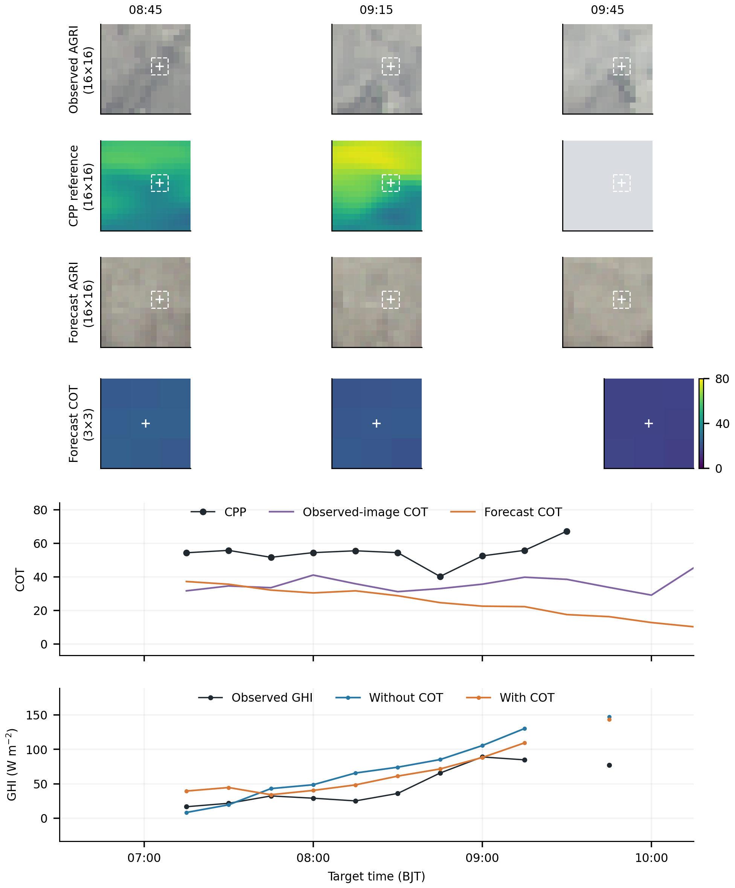
图S1 湖北米庄站的云场、COT与GHI时间序列（2025年9月26日06:15起报，北京时间）。在10个有效目标时刻，无COT和加COT的GHI预报RMSE分别为33.65和27.24 W/m²。
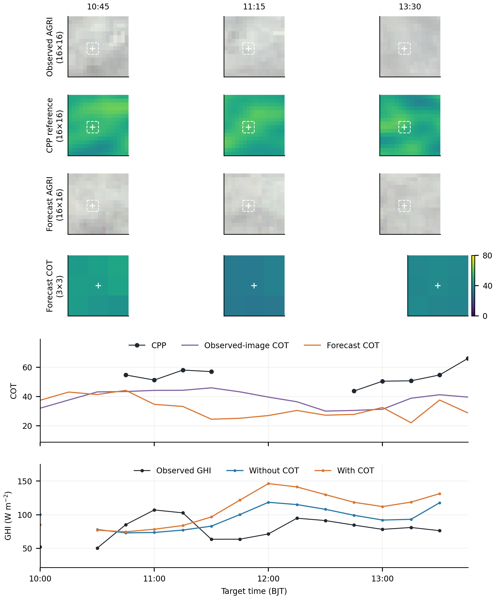
图S2 湖北牛首站的云场、COT与GHI时间序列（2025年9月26日09:45起报，北京时间）。在14个有效目标时刻，无COT和加COT的GHI预报RMSE分别为29.10和41.02 W/m²。
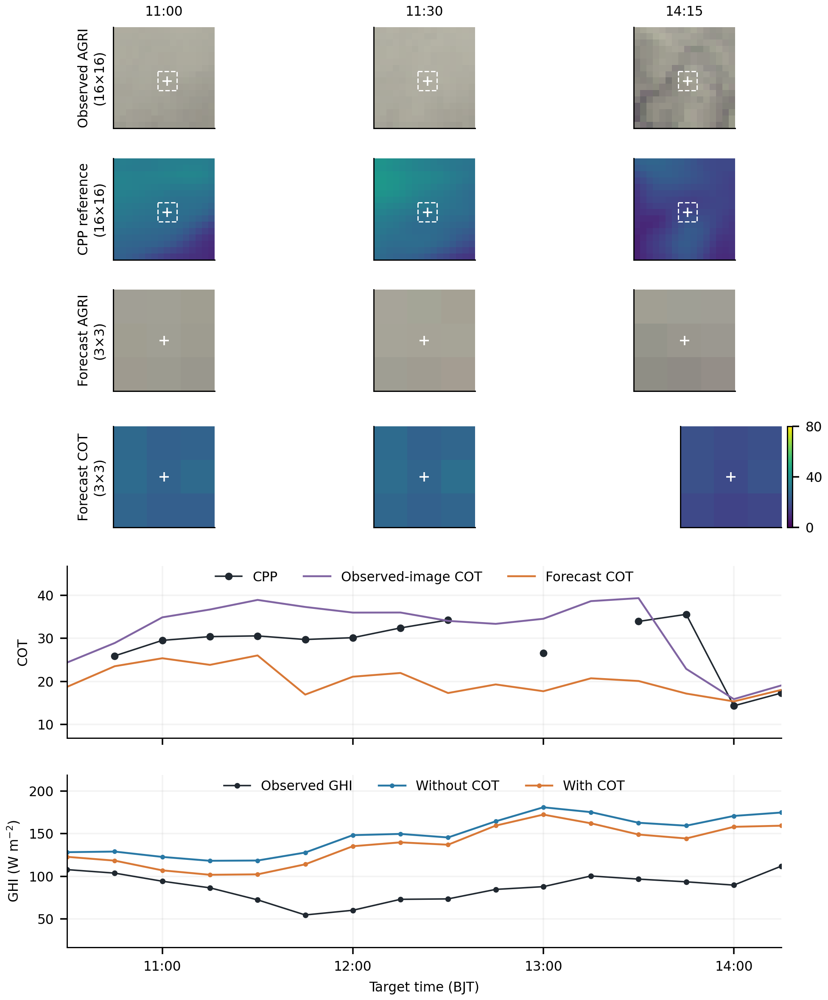
图S3 湖南竺家站的云场、COT与GHI时间序列（2025年1月4日10:15起报，北京时间）。在16个有效目标时刻，无COT和加COT的GHI预报RMSE分别为65.62和54.81 W/m²。
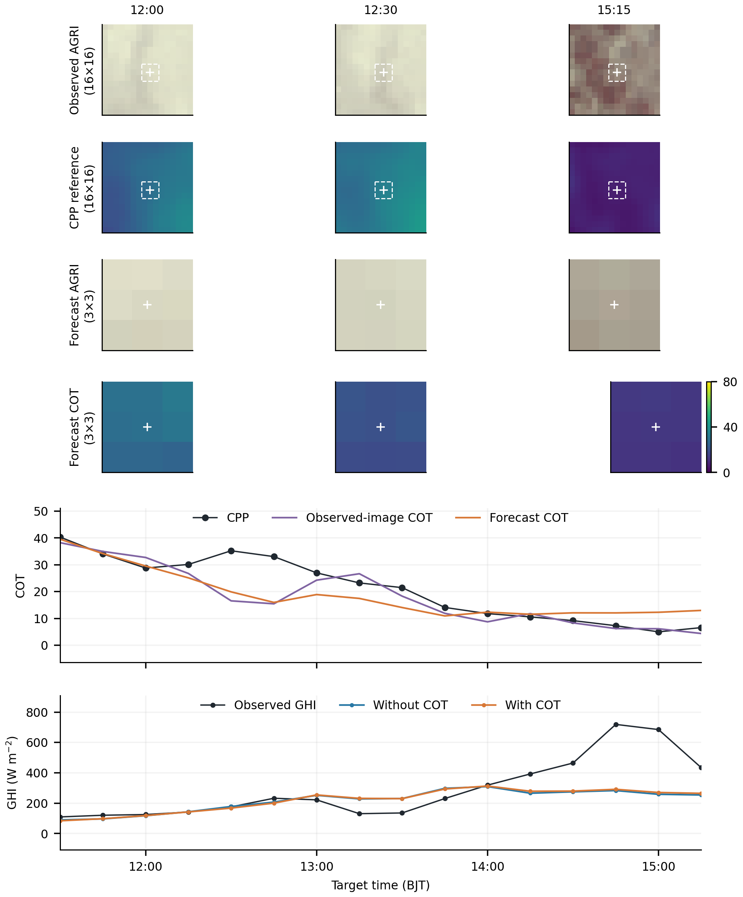
图S4 湖南四里站的云场、COT与GHI时间序列（2025年6月15日11:15起报，北京时间）。14:00至14:45，实测GHI持续上升，两组预报均先下降、后小幅回升。在16个有效目标时刻，无COT和加COT的GHI预报RMSE分别为173.50和168.99 W/m²。
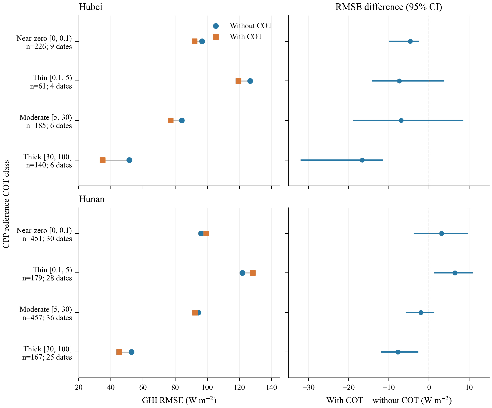
图S5 利用同期AGRI观测估计GHI的误差，按站点参考COT分组。上、下排分别为湖北和湖南。左列给出有无COT时的RMSE，右列给出两者的差值（加COT减无COT）及按目标日期配对重采样得到的95%置信区间。各组标注为站点—时次记录数和日期数。
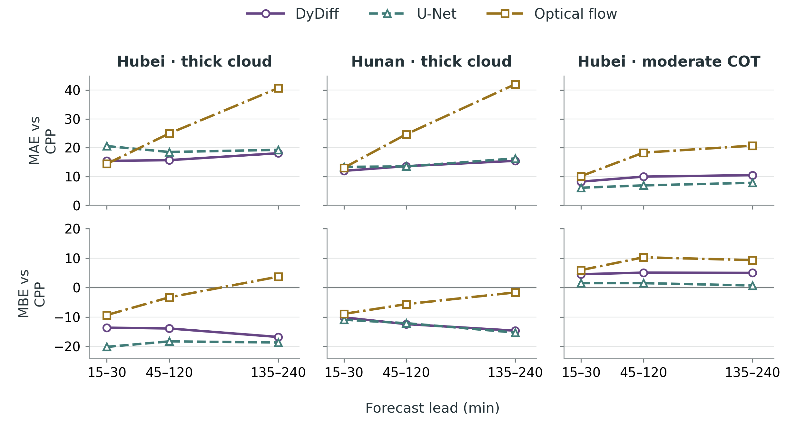
图S6 预测云图反演的站点中心COT相对CPP的误差。上排为平均绝对误差，下排为平均偏差（预测减CPP）。每个点汇总横轴所示时效段的结果。厚云的参考COT为30～100，中等光学厚度云的参考COT介于5和30之间（含5）。
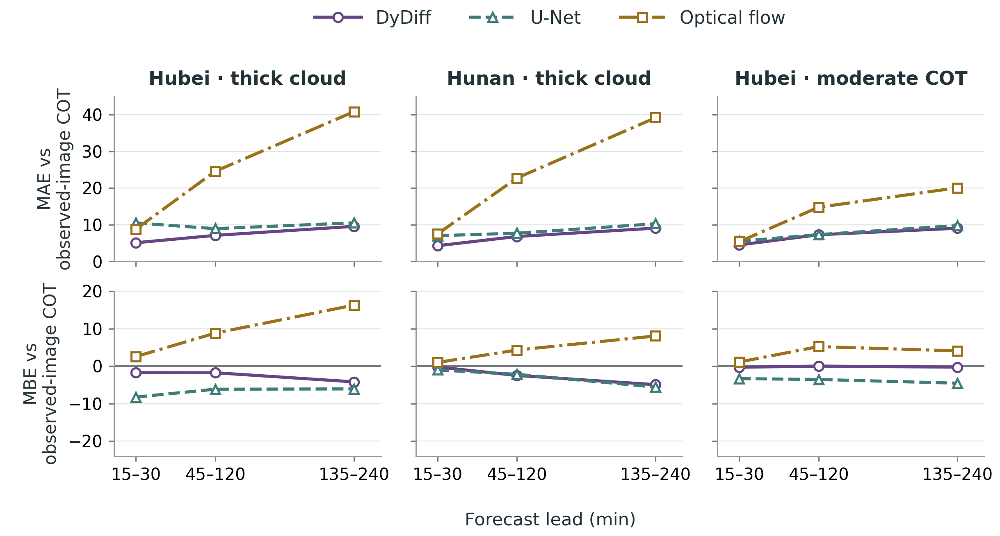
图S7 相同目标时刻，预测云图与观测云图在站点中心像元的COT反演差异。上排为平均绝对差，下排为平均偏差（预测图反演值减观测图反演值）。样本与时效段同图S6。
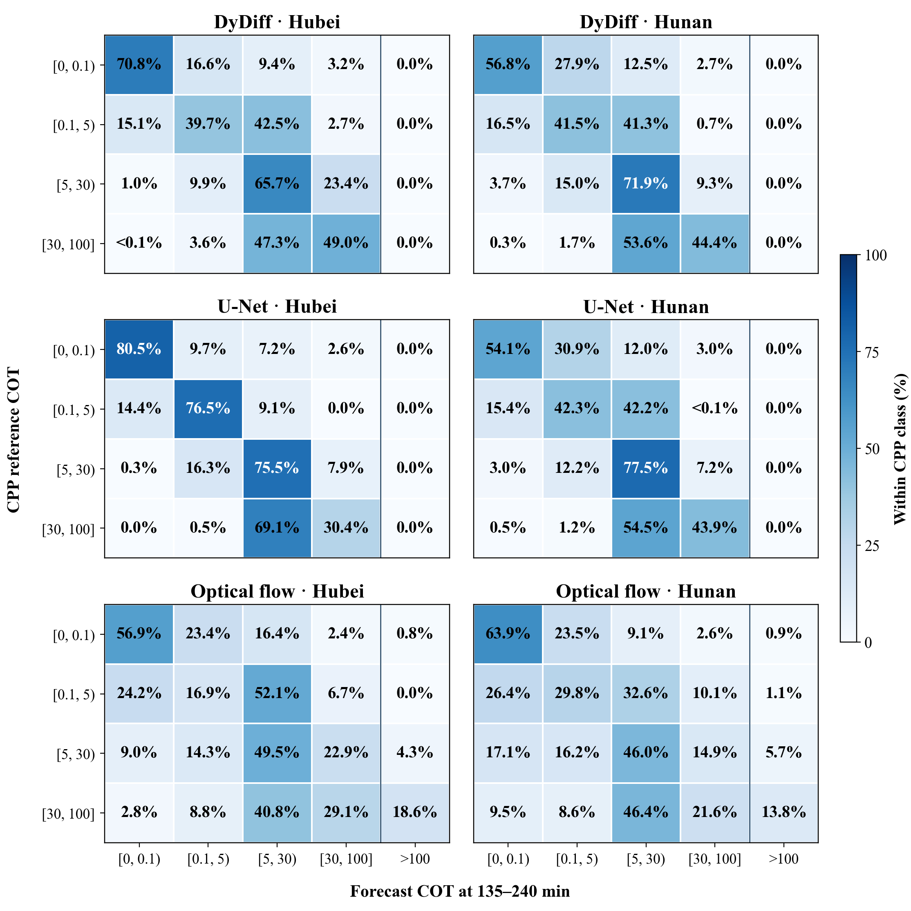
图S8 湖北和湖南135～240分钟预报的COT分档。每行对应一个CPP参考类别，格内为落入各预测档的比例。先在各站计算比例，再对站点等权平均。DyDiff的八个成员分别判档。最右列单列预测值超过参考上限100的情况。厚云行在湖北覆盖433个站点—目标时次（9天），在湖南覆盖827个（33天）。
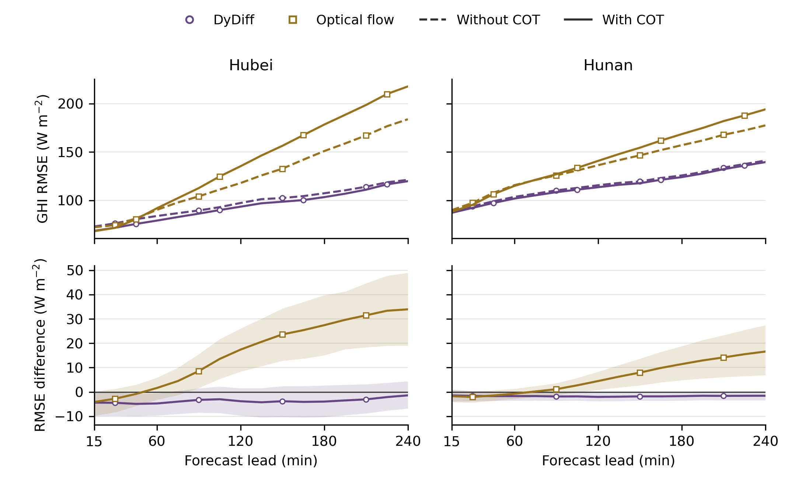
图S9 湖北（左）和湖南（右）的GHI预报误差随时效的变化。上排给出八成员DyDiff和光流在有无COT时的区域平均RMSE。下排给出各方法的配对RMSE差值（加COT减无COT），阴影为按目标日期配对重采样得到的95%置信区间。